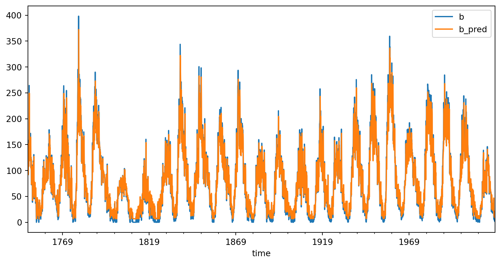
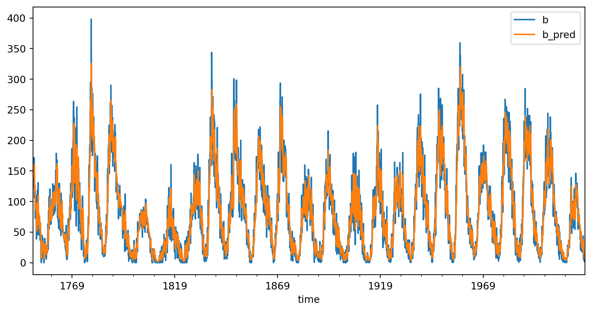
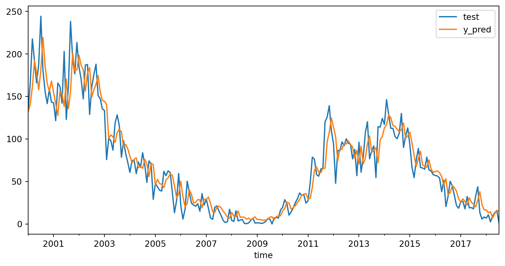

import numpy as np
A = np.array([[3, 4, 0],
[0, 2, 3],
[4, 0, -5]])
B = np.array([19, 8, 7])
# Using np built-in linear equation solver
x = np.linalg.solve(A,B)
print( tuple(x))
# WOW that was easy.(3.0, 2.5, 1.0)Welcome
2023-10-19
Solving a system of linear equations is fast.
It can easily and quickly handle large data.
So if you can get your problems into the Ax=b form; your golden.
\[ A = \begin{bmatrix} 3 & 4 & 0\\ 0 & 2 & 3 \\ 4 & 0 & -5 \end{bmatrix} \]
\[ b = \begin{bmatrix} 19 \\ 8\\ 7 \end{bmatrix} \]
\[ A = \begin{bmatrix} 3 & 4 & 0\\ 0 & 2 & 3 \\ 4 & 0 & -5 \end{bmatrix} \]
\[ b = \begin{bmatrix} 19 \\ 8\\ 7 \end{bmatrix} \]
This is where SVD (Single Value Decomposition) comes to the rescue.
Beyond solving a system of linear equations.
It is used for:
As long as you can get your problem into the Ax=b form.
Singular value decomposition (SVD) is a factorization of a real or complex matrix.
SVD of Matrix A is:
So when we system that can be written as: Ax=b
\[ x^\prime = V \Sigma U^T b \]
Then \(x^\prime\) is the solution that has the minimum norm (closest to origin). If it is not in the range, then it is the least-squares solution.
Take a minute and google how to multiply matrixs
Great resource: SVD Tutorial
There exists a data set that contains the number of sun spots observed for a given month, spanning hundreds of years.
https://github.com/ejboettcher/GemCity-ML-AI_Random
In the above tutorial, I used tensorflow, WITH GPU and it took several minutes to train the algorithm to predict sunspot activity. And it was good.
import numpy as np
import matplotlib.pyplot as plt
import pandas as pd
sunspot_data = pd.read_csv("data/Sunspots.csv")
sunspot_data['time'] = pd.to_datetime(sunspot_data['Date'], format='%Y-%m-%d')
nname = 'Monthly Mean Total Sunspot Number'
window = 1
dataset = np.ones((len(sunspot_data)-window, window))
for ii in range(len(dataset)):
dataset[ii,:] = sunspot_data.loc[ii:ii+window-1, nname].to_numpy().T
A = dataset
A = np.column_stack([np.ones(A.shape[0]), A])
b = sunspot_data.loc[window:, nname].to_numpy()
# calculate the economy SVD for the data matrix A
U,S,Vt = np.linalg.svd(A, full_matrices=False)
# solve Ax = b for the best possible approximate solution in terms of least squares
x_hat = Vt.T @ np.linalg.inv(np.diag(S)) @ U.T @ b
# perform train and test inference
b_pred = A @ x_hat
train_data = pd.DataFrame({'time':sunspot_data.loc[window:,'time'],
'b':b,
'b_pred':b_pred} )
train_data.plot(x='time', y=['b', 'b_pred'])
# compute train and test MSE
train_mse = np.mean(np.sqrt((b_pred - b)**2))
print("Train Mean Squared Error:", train_mse)
plt.show()Train Mean Squared Error: 19.273508962865446
import numpy as np
import matplotlib.pyplot as plt
import pandas as pd
sunspot_data = pd.read_csv("data/Sunspots.csv")
sunspot_data['time'] = pd.to_datetime(sunspot_data['Date'], format='%Y-%m-%d')
nname = 'Monthly Mean Total Sunspot Number'
window = 12
dataset = np.ones((len(sunspot_data)-window, window))
for ii in range(len(dataset)):
dataset[ii,:] = sunspot_data.loc[ii:ii+window-1, nname].to_numpy().T
A = dataset
A = np.column_stack([np.ones(A.shape[0]), A])
b = sunspot_data.loc[window:, nname].to_numpy()
# calculate the economy SVD for the data matrix A
U,S,Vt = np.linalg.svd(A, full_matrices=False)
# solve Ax = b for the best possible approximate solution in terms of least squares
x_hat = Vt.T @ np.linalg.inv(np.diag(S)) @ U.T @ b
# perform train and test inference
b_pred = A @ x_hat
train_data = pd.DataFrame({'time':sunspot_data.loc[window:,'time'],
'b':b,
'b_pred':b_pred} )
train_data.plot(x='time', y=['b', 'b_pred'])
# compute train and test MSE
train_mse = np.mean(np.sqrt((b_pred - b)**2))
print("Train Mean Squared Error:", train_mse)
plt.show()Train Mean Squared Error: 17.875197212239335
split_num = 3000
A = dataset
A = np.column_stack([np.ones(A.shape[0]), A])
X_train = A[:split_num,:]
y_train = sunspot_data.loc[window:split_num+window-1, nname].to_numpy()
X_test = A[split_num:,:]
y_test = sunspot_data.loc[split_num+window:, nname].to_numpy()
print(X_test.shape, y_test.shape, X_train.shape, y_train.shape)
# calculate the economy SVD for the data matrix A
U,S,Vt = np.linalg.svd(X_train, full_matrices=False)
# solve Ax = b for the best possible approximate solution in terms of least squares
x_hat = Vt.T @ np.linalg.inv(np.diag(S)) @ U.T @ y_train
# perform train and test inference
y_pred = X_train @ x_hat
test_predictions = X_test @ x_hat # This is the MAGIC
test_data = pd.DataFrame({'time':sunspot_data.loc[split_num+window:,'time'],
'test':y_test,
'y_pred':test_predictions} )
test_data.plot(x='time', y=['test', 'y_pred'])
# compute train and test MSE
train_mse = np.mean(np.sqrt((y_pred - y_train)**2))
test_mse = np.mean(np.sqrt((test_predictions - y_test)**2))
print("Train Mean Squared Error:", train_mse)
print("Test Mean Squared Error:", test_mse)
plt.show()(223, 13) (223,) (3000, 13) (3000,)
Train Mean Squared Error: 18.20793849887562
Test Mean Squared Error: 13.688869408003756
Let’s take a look at how SVD can be used for image compression.
SVD can just do it. You just need to get it into the Ax=B form.

Gem City Tech ML/AI